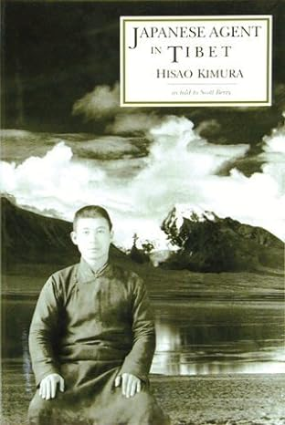

前段时间去了趟日本。在飞机上准备了一本一直想读的书，Japanese Agent in Tibet。木村肥佐生堪称史上最倒霉的特工了，数次在任务中间失去了雇主（雇佣国）。他的故事有意思，但是史料价值并不高。我分三部分来讲述有关这本专辑的故事。
第一部分是对全书的介绍。本来想自己写，后来我找到了一份英文的对这本书的详细介绍，Sandip C Jain在Sikkim Express上写的Hisao Kimura。所以我只是简单地把它翻译成汉语。

这是第二次世界大战期间日本间谍木村肥佐生(Hisao Kimura)的迷人故事，他乔装打扮进入西藏执行间谍任务，却不知道战争实际上已经结束。他最终抵达噶伦堡，伪装成蒙古僧侣待了几年时间。本书也讲述了他在噶伦堡的故事。
木村肥佐生是一名日本间谍，他伪装成蒙古僧人进入西藏，其目的是要了解更多有关中国军队在二战期间计划开通的补给路线的信息。这次旅程带他从蒙古穿过西藏东部(Eastern Tibet)到达拉萨，然后最终到达噶伦堡。他穿越西藏然后进入噶伦堡的史诗般的旅程无疑是历代日本人所经历过的最大胆的旅程之一。
噶伦堡是当时所有文化、商业和间谍活动的区域中心，最终成为木村肥佐生的临时住所；他进入噶伦堡后仍继续进行跨境间谍活动，但这一次不是为了他的日本主人，而是为了英国情报部门。
即使按照第二次世界大战的最高标准，木村肥佐生的西藏之旅无疑是最迷人的生存和勇气的故事之一。
木村肥佐生于1922年出生于长崎佐世保，成长于日本刚刚开始意识到其潜力的时期。日本是远东唯一没有被殖民的国家，事实上在日本人称之为明治时代的时期成功地进行了自己的工业革命。那个时代的日本年轻人被教导相信他们的国家是将远东小国从西方帝国主义的罪恶中拯救出来的解放者。到20世纪30年代末，日本完全控制了朝鲜、台湾、满洲（Manchuria）和中国沿海地区。当时的日本宣传机器影响了日本的年轻人，让他们相信“天皇军队”的使命是使亚洲其他地区文明化。学校实行义务军事训练，木村肥佐生就读的路德学校(Lutheran School)也训练学生成为未来的士兵。
学校毕业后，木村肥佐生申请进入商船学院(Merchant Marine Academy)，但未能获得资格，他转而自愿加入兴亚院（Asian Development Board日语为興亜院）前往中国。年仅17岁的木村肥佐生在媒体报道下相信，内蒙古人民正在为摆脱中国人的统治而进行斗争，而日本人正在无私地帮助蒙古人争取独立。木村肥佐生在加入亚洲发展委员会后，与其他四名日本同胞一起被派往担任蒙古人的日本顾问。
进入（内）蒙古后，木村肥佐生在一座偏远的寺庙里学习了蒙古语。他不仅完美地学会了蒙古语，还掌握了土生土长的蒙古人的言谈举止和习惯。有一段时间，他甚至开始打扮成蒙古人，扎着辫子，很容易冒充蒙古人。在（内）蒙古呆了几年，除了少数人知道他的来历外，其他人都认为他是本地蒙古人。他甚至把名字改成了达瓦桑波以便于伪装。
1942 年夏天，木村肥佐生获得了义务兵役资格，但此时他已经意识到日本的扩张主义野心的真相。他亲眼目睹了日军对侵占国家的残酷镇压和暴行。幸运的是，他身材矮小，没有服兵役，而是自愿以间谍的身份进入西藏，以查明传闻中中国人经过西藏的军事补给路线。他自愿接受这项任务更多是为了满足自己的探索欲望，而不是真正从事间谍工作。在一对忠诚的蒙古夫妇丹赞(Danzan)和 次仁措(Tserentso)的陪伴下进入西藏后，肥佐生经历了穿越西藏西部高海拔沙漠的可怕时光，并在一个名为柴达木的地方被拘留了一年。在这里，他因一场重病差点丧命，但在丹赞和次仁措这对忠诚的夫妻俩的精心护理下，他最终幸存。他从柴达木南下长途跋涉到拉萨，躲避土匪、当地军阀和过分热心的西藏僧人，到达西藏首府时，他饥肠辘辘、肮脏不堪、衣衫褴褛、身无分文，充满恐惧。与文明世界隔绝多年，无法得到外界的任何消息，他到达拉萨时，听说他的国家的战争努力已被盟军和广岛和长崎的原子弹彻底摧毁。他意识到自己在拉萨是一个穷困潦倒的人，一个无主的间谍。一个没有汇报上级的间谍特工！
在拉萨经历了几次不幸之后——其中一次，一位高级僧人试图触怒他的谦虚，差点让他失去了男子气概——木村肥佐生继续向南迈进——前往噶伦堡，努力与文明世界重建联系，确认日本战后的准确情况。
1945年10月的第二个周，他到达噶伦堡，没有地方住，也没有钱租房子，他在镇上11英里(11th Mile)处周边的一位藏族女士家里找到了住处。三个人的身体和经济状况都十分糟糕。他们来到噶伦堡只是有人向他推荐一位名叫达玛(Dharma)的人。达玛原为外蒙古僧人，是一位多才多艺的艺术家，擅长绘画、雕刻、金银锻造。他早些时候逃离西藏，因为有人怀疑他利用自己作为艺术家的特殊才能伪造了新发行的西藏纸币。
在噶伦堡市场短暂搜寻后，他们找到了达玛，两人一拍即合。第一天，达玛提出带 木村 去电影院，以便他们可以看电影并观看电影开始前播放的新闻剪辑。那天晚上晚些时候，达玛带着肥佐生去了新奇电影院(Novelty Cinema Hall)，当时该电影院位于梅拉广场(Mela Ground)旁边，就在现在的大吉岭辛迪加大楼(Darjeeling Syndicate Building)下面。新闻剪辑中播放了广岛和长崎被彻底摧毁的片段，让肥佐生震惊地意识到他现在无处可去，也没有人可以求助。他是一名游荡的间谍，没有祖国，也没有上级可以挽救他。他意识到他必须继续假装成蒙古和尚，在可能的情况下玩这个游戏。
这一认识让他感到沮丧，有一段时间他思考了面前仍然可行的几种选择，包括向印度警方自首。他意识到他不能这样做，因为这会危及他无辜而忠实的同伴丹赞和次仁措的生命。他知道，如果落入印度执法者手中，他们的处境将会很糟糕。此外，他还答应这对夫妇去菩提伽耶朝圣，他打算遵守诺言。为了准备这次朝圣之旅，他卖掉了他唯一的财产——他的两匹马。他和同伴用这笔钱租了一间6英尺x6英尺的房间，每月5卢比；他和同伴用剩下的钱开始了前往菩提伽耶的旅程。他从噶伦堡长途跋涉四十英里到达西里古里，甚至连车票都没买就登上了火车。经过最初的一些运气，他们最终在印度平原某处的火车站被命令下车，他们只是在火车站站台上露营了几天，然后再次登上另一列火车，将他们带到目的地。
回到噶伦堡后，迫切需要找到工作来维持生计，肥佐生首先找到了喜马拉雅酒店的老板大卫·麦克唐纳(David MacDonald)。由于在那里找不到工作，他被引导到西藏镜报出版社著名的巴布·塔钦（Babu Tharchin）那里，后者以每月15卢比的薪水雇用他到印刷厂工作。每月 15 点。丹赞和次仁措也受雇于塔钦家族，在他们的住所打零工。肥佐生并不知道巴布塔钦对他还有其他的想法……
他很快就适应了噶伦堡的节奏。他在达钦印刷厂工作，学会了说藏语并结交了朋友。他很快就被噶伦堡迷住了，并认为很难找到像噶伦堡这样更可爱、更有趣的地方了。
有一天，为了消磨时间，肥佐生画了一幅漫画和一张地图，讲述中国国共两党内斗的情况。他的雇主巴布·塔钦（Babu Tharchin）对此印象深刻，因此任命肥佐生在他的报社而不是印刷厂工作。同样早些时候，在两人第一次会面时，肥佐生还画了一张他从蒙古到拉萨再到噶伦堡的路线图。达钦要求他再次绘制一张西藏之旅的地图，指出哪些领土由谁控制，以及一些特定地点的大概兵力部署。
绘制地图一周后，巴布·塔钦突然命令肥佐生立即穿着体面，陪他去参加一个会议。肥佐生尽可能地打扮得漂漂亮亮，陪同塔钦来到喜马拉雅酒店下面的一间平房，那里有一位英国绅士和当地负责情报的拉次仁(Lha Tsering)先生。这位英国绅士是埃里克·兰伯特(Eric Lambert)先生，他是印度东北部情报部门的负责人。情报官员向他展示了他之前绘制的地图，并询问肥佐生是否愿意回去收集更多关于西藏东部的军队兵力和部署的情报。他们还没有识破他的蒙古族伪装，也不知道他实际上是日本人。他们要求他温习藏语并学习英语，并安排他在接下来的学期中进入格雷厄姆博士之家学习。
在格雷厄姆博士之家，有一天，他接触到了他在亚洲发展委员会的老同事西川(Nishikawa)。西川也是一位伪装成蒙古僧侣的日本间谍。为了不想让格雷厄姆博士之家的麦肯齐小屋(Mackenzi Cottage)的其他人知道他们的秘密，两人来到了丹赞和次仁措居住的小房间。两人见面后的第一件事就是，他们都忘记用日语说话了。西川（又名洛桑）在分享了自己在西藏的冒险经历后提到，通过春丕谷走私货物进出西藏是多么容易，这让肥佐生产生了赚钱的想法，他可以用这些钱返回祖国。两个朋友决定进入走私行业。西川将从噶伦堡出发，多次穿越则普拉山口走私烟草和其他商品，以赚取一些急需的经济收入。
与此同时，肥佐生的同伴丹赞和次仁措从严重的腹泻中康复后决定返回蒙古。肥佐生为了帮助他们在经济上帮助他们回家，他把他最后一件值钱的东西——诚日则——慈悲观世音菩萨的金像——和他的玛瑙鼻烟壶，以130卢比的价格卖给了大卫·麦克唐纳。这是他能给忠实同伴的全部礼物。1946年1月下旬，他们与西川一起前往拉萨，西川正在另一次走私活动中前往则普拉的另一边。巴布·塔钦感受到肥佐生在同伴离开后的孤独感，邀请他搬进办公室后面的一个宿舍，并在塔钦家吃饭。在办公室里，陪伴着肥佐生的是巴布·达钦的另一位常客——卡尔梅克蒙古喇嘛，名叫格西旺杰(Geshe Wangyel)。格西是一位游历广泛的僧侣，也是一位著名的学者，他甚至曾在伦敦逗留一段时间，担任著名东方学学者马可·帕利斯（Marco Pallis）的佛教老师。格西喇嘛还具有敏锐的商业头脑，通过拉萨和中国之间的货物贸易发了财，他用这笔财富帮助哲蚌寺的僧侣。
在噶伦堡期间，肥佐生还接触到了其他几位有趣的人物。权倾一时的达赖喇嘛曾经的侍卫贡培拉、最受欢迎的西藏作家之一的江乐金公·索南嘉波(Changlochen Gung Sonam Gyalpo)、古怪的学者根敦群培(Gendun Choephel)以及许多各种各样的人物当时都在噶伦堡，肥佐生与他们有过一些交往。尽管大多数人仍然认为他是蒙古僧侣，但也有少数人知道他的原国籍。事实上，就连巴布·塔钦也知道肥佐生的小秘密，尽管他从未让肥佐生知道他的秘密已被破解。
肥佐生还接触到了非常非传统的“白喇嘛”西奥斯·伯纳德（Theos Bernard），他自称为莲花生大士的化身。西奥斯实际上邀请肥佐生陪他去拉达克周围探险。虽然肥佐生很想去，但这个提议被巴布·塔钦否决了。这对肥佐生非常幸运，因为西奥斯·伯纳德的整个探险队在试图非法越境进入西藏时被处死。
1946年学期开始时，肥佐生被送往格雷厄姆博士之家学习英语和藏语课程。他的入学推荐人不是别人，正是格雷厄姆博士的女婿警长少校。一位名叫邦菲尔德（Bumfield）的英国女士每天给他上私课。令她惊讶的是，肥佐生以超快的速度学会了英语，几乎不知道肥佐生在日本的一所教会学校学习过，已经掌握了英语的基本知识。
大约在那年年底，巴布·达钦透露了他的计划，并告诉肥佐生，他将通过拉萨进入西藏东部，试图查明中国人是否正在为入侵西藏做任何准备。尽管巴布·塔钦告诉肥佐生，他只会为达钦所拥有的《西藏镜报》提供消息来源，但肥佐生毫不怀疑，他是被英国情报部门派去当间谍的。肥佐生还被非常坦白地告知，另外两个人早些时候也被派往西藏东部偏远、无政府和不稳定的地区执行类似的任务，但两人都没有活着回来。塔钦希望肥佐生立即离开，为他提供了一笔慷慨的资金，并承诺在他成功回归后给予他更多奖金。 1946年12月12日，他加入一位康巴武僧带领的骡队离开噶伦堡，后者正在返回拉萨的途中。 1947年1月1日，经过相对顺利的20天旅程（除了最后两天他因腹泻而倒下），肥佐生进入拉萨，前往他的老熟人南杰达拉玛的住所。与他会合的还有他的日本朋友西川，西川早些时候曾前往拉萨在哲蚌寺学习。对于西川来说，旅行的诱惑太强烈了，他决定陪伴肥佐生执行他的秘密任务。经过两个月的艰苦跋涉，两人到达西藏东部小镇昌都。肥佐生在这里几乎没有发现任何中国武装存在的迹象，也没有发现任何中国入侵西藏的意图。
两人决定继续北上调查。他们前往边境城镇措吉松多(Tsokyisumdo)。在这里，西藏警卫误认为他们是热振仁波切的支持者。几周前，热振仁波切的追随者在其领导人被拉萨政府逮捕后，曾试图在拉萨夺取权力。两人被捕、遭到殴打并被监禁。在他们被关押期间，肥佐生了解到，驻扎在西藏东部这些偏远地区的拉萨士兵的行为就像侵略军，当地人鄙视他们。来自拉萨的士兵会抢夺当地人拥有的一切——包括他们的女人。经过昌都的询问，误会消除了，他们被放了出来，几天后偶然发现了中国人在二战期间使用的废弃机场。他们甚至发现了通往西宁城的马路。打探到了很多目标情报后，肥佐生决定先返回拉萨，然后再向噶伦堡的雇主报告。经过漫长而危险的旅程后，他们返回噶伦堡，并被要求前往西隆(Shillong)提交报告。再一次，他发现，英国人已经离开了印度次大陆，印度政府对继续这些情报工作不敢兴趣。他再次成为没有雇主的特工。此后，他回到噶伦堡，并继续在西藏明镜出版社开始工作。在此期间，令他意外的是，他还是因从西藏东部带回的情报而从他的上级那里得到了丰厚的报酬。他还有幸会见了著名的马可·帕利斯。马可·帕利斯被公认为佛教和西藏研究最重要的学者之一。
在因间谍活动获得一大笔钱后，肥佐生意识到，如果他能赚更多钱，就有可能为自己买一张返回日本的机票。他认为赚钱最快的方法就是走私货物到西藏，而所有可以交易的商品中最赚钱的是煤油。他用当间谍赚来的钱购买煤油和欧米茄手表，然后进入拉萨，在那里出售货物，获得了可观的利润。在回程中，他走私回来了黄金和白银，并在加尔各答出售。在加尔各答，他再次购买了可以在西藏出售的货物，并再次前往拉萨，在贸易中获得了可观的利润。他再次回到加尔各答出售从拉萨带回来的黄金。
与此同时，他想返回日本的愿望与日俱增。当他第二次以商人身份前往加尔各答时，他在酒店房间休息，突然看到当地报纸上的一篇新闻报道，一艘名为“雅加达丸(Yakarta Maru)”的日本商船停靠在加尔各答乔治国王码头。他情绪激动地冲向码头，找到了船长室，试图向他解释自己的尴尬处境。令他惊恐的是，他意识到自己几乎忘记了如何说自己的母语。然而他还是（用日语）写下了他想对船长说的话。船长虽然对肥佐生所处的困境表示同情，但他以国际海事规则以及美国人仍然控制着日本的事实以及担心他们两人都会被当局逮捕的事实为由，辩称自己无法提供帮助。
肥佐生回到酒店房间，心情十分沮丧，但他已经做出了决定。他度过了一个不眠之夜，清晨走到加尔各答警察局自首，令在场的警察感到震惊和惊讶。经过彻底审讯并在加尔各答监狱短暂监禁后，肥佐生被最终于1950年5月10日被驱逐回日本，从而结束了20世纪最迷人的间谍故事之一。